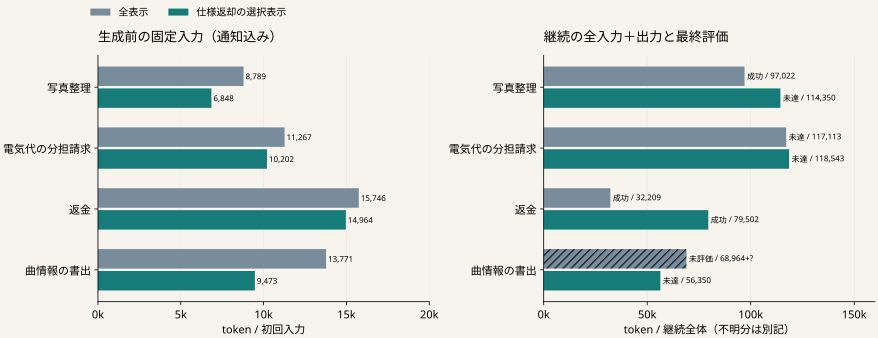

入力を短くするだけでは、仕事全体が安くなるとは限らない。
一律の出力省略では
初回入力は短くても総tokenが増加。
省略した情報の扱いを見直した。
作業データと見出しを残し、
照合できたAPI仕様返却だけを省略。
最終結果と全継続費用を比較する。
| 比較する差 | 両条件で共通のもの |
|---|---|
| 全表示 | ４既知課題・８応答後の環境とPython状態 残予算通知・残量に応じた出力枠 初回cacheなしを実測照合、以後は再利用可 |
| 仕様返却の選択表示 | |
| 保持する情報 | 操作・作業データ・見出し・最新出力・原文への参照 |
| 各条件の上限 | 16生成／120,000 token／480秒／元課題のAPI枠 |

k＝1,000 token。左右の横軸の範囲は異なる。右側は失敗を含む全継続費用。不明分は別記。
| 課題 | 条件 | 最終 | 継続token | AI | API |
|---|---|---|---|---|---|
| 写真整理 | 全表示 | 成功 | 97,022 | 7 | 94 |
| 写真整理 | 仕様返却の選択表示 | 未達 | 114,350 | 10 | 48 |
| 電気代の分担請求 | 全表示 | 未達 | 117,113 | 9 | 9 |
| 電気代の分担請求 | 仕様返却の選択表示 | 未達 | 118,543 | 10 | 7 |
| 返金 | 全表示 | 成功 | 32,209 | 2 | 2 |
| 返金 | 仕様返却の選択表示 | 成功 | 79,502 | 5 | 3 |
| 曲情報の書出 | 全表示 | 未評価 | 68,964 ＋不明 | 5 | 60 |
| 曲情報の書出 | 仕様返却の選択表示 | 未達 | 56,350 | 5 | 62 |
| 費用・観測 | 全表示 | 選択表示 |
|---|---|---|
| 継続の既知token | 315,308 | 368,745 |
| 使用量不明の呼出し | 1 | 0 |
| 継続の経過秒 | 1385.585 | 1218.854 |
| 表示構築の秒 | 0.004 | 0.021 |
| 入力計数の秒 | 1.001 | 1.306 |
| 原文再読／参照選択 | 0 / 0 | 0 / 0 |
| 復元API／復元秒 | 51 / 10.46 | 51 / 9.39 |
表示構築と計数は継続秒の内数。計数秒は既知分の和、時間不明0件。未完遂バッチの合計を優劣の比較に使わない。
| 費用の区間 | 全表示 | 選択表示 |
|---|---|---|
| 共通前半（各条件に１回加算） | 210,380 | 210,380 |
| 今回の継続 | 315,308 ＋不明1回 | 368,745 |
| 前半＋継続の論理的な全仕事 | 525,688 ＋不明1回 | 579,125 |
元の前半を各条件へ１回ずつ加える。
新しい全体実行を行った値ではない。
実験用の復元とモデルロードは別の実測費用として残す。
比較は未完遂で採用条件に届かない。評価済みの対に成功喪失もあり、この形の省略を採用しない。
基準：全８件・既知使用量・監査合格、
成功課題の喪失０、継続総token減少。
既公開の仕様と送信前の拒否を照合し、
修復に必要な再取得・AI呼出しを絞る。
４既知課題・１seed。
多担当の通信費や再編効果は未測定。
新規性と投稿の中心的主張は未確立。